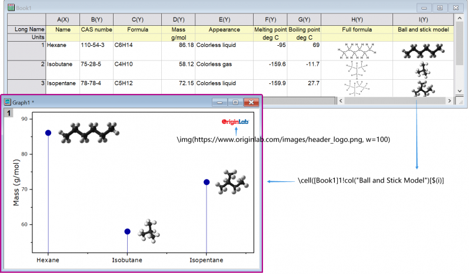

Bilder aus Datei, Web-URL oder Arbeitsblattzellen einfügen
insert-image-file-web
Seit Origin 2022b können Sie Bilder aus Dateien, von einer Web-URL oder aus einer Arbeitsblattzelle einfügen.

Bild aus Datei oder Web einfügen
Sie können Bilder aus einer Bilddatei oder einer Web-URL in ein Textobjekt einfügen. In jedem Fall werden die Bilder verlinkt und nicht eingebettet. Das bedeutet, dass (a) die Projektgröße auf ein Minimum reduziert bleibt und (b) falls/wenn Bilder geändert werden, auch das eingefügte Bild aktualisiert wird.
- Klicken Sie auf der Symbolleiste Hilfsmittel auf das Hilfsmittel Text einfügen
 und dann einmal auf das Diagramm, um den "direkten" Bearbeitungsmodus zu öffnen. Oder klicken Sie mit der rechten Maustaste auf das Diagramm und wählen Sie Text hinzufügen im Kontextmenü.
und dann einmal auf das Diagramm, um den "direkten" Bearbeitungsmodus zu öffnen. Oder klicken Sie mit der rechten Maustaste auf das Diagramm und wählen Sie Text hinzufügen im Kontextmenü.
- Geben Sie Text nach Bedarf ein und, wenn Sie bereit sind, das Bild einzufügen, klicken Sie mit der rechten Maustaste und wählen Sie Einfügen: Bild aus Datei oder Bild aus Web:
- Beim Einfügen eines Bildes aus einer Datei navigieren Sie zu Ihrer lokalen Bilddatei und klicken Sie auf Öffnen.
- Beim Einfügen eines Bilds aus dem Web benötigen Sie eine URL (Hinweis: Navigieren Sie zu Ihrem Web-Bild, klicken Sie dann mit der rechten Maustaste und kopieren Sie die Adresse (Bildadresse kopieren, Bildlink kopieren etc.).
Um die zum Einfügen eines Bildes verwendete Syntax zu untersuchen (oder zu modifizieren), können Sie das eingefügte Objekt auswählen und Eigenschaften wählen. Im Dialog Textobjekt sollten Sie etwas Ähnliches wie in diesen Beispielen sehen:
Beispiele:
\img(file://"C:/Program Files/OriginLab/Origin2022b/Samples/Image Processing and Analysis/white camellia.jpg",w=200) \img(https://www.originlab.com/images/header_logo.png, w=200)
... wobei die Option "w=" die Standardbreite in Pixel des eingefügten Bildes ist. Die Breite ist durch den Benutzer änderbar, indem der Wert "w=" in Eigenschaften geändert wird oder -- wenn keine Breite festgelegt ist -- indem einfach an den Auswahlelementen des Objekts gezogen wird.
Diagramm und Tabelle einfügen
Sie können
\img(Graph1)
oder
\img([book1]sheet1)
weitergeben, um Diagramm- oder Arbeitsblatttabellen einzufügen.
Bilder aus einer Arbeitsblattzellen einfügen
Sie können auch ein Bild aus einer Arbeitsblattzelle in ein Textobjekt einfügen, aber Sie müssen dazu eine spezielle Syntax verwenden, da es keine Menüoption zum Hinzufügen gibt. Die Syntax ist nicht kompliziert und kombiniert eine \cell( )-Escape-Sequenz mit einer Zellenreferenz -- entweder eine Bereichsreferenz (z. B. [Book1]Sheet1!col(C)[1]) oder eine Referenz für einen Bereich mit Name.
- Klicken Sie auf der Symbolleiste Hilfsmittel auf das Hilfsmittel Text einfügen und dann einmal auf das Diagramm, um den "direkten" Bearbeitungsmodus zu öffnen. Oder klicken Sie mit der rechten Maustaste auf das Diagramm und wählen Sie Text hinzufügen im Kontextmenü.
- Geben Sie Ihre Zeichenkette in das Textobjekt mit Hilfe der untenstehenden Beispiele als eine Art Anleitung ein:
- Wenn Sie eine Zeichenkette kopieren und einfügen (z. B.
\cell([Book1]Sheet1!B[1])), klicken Sie außerhalb des Textobjekts, um den Bearbeitungsmodus zu verlassen. Ihr Zellenbild sollte im Textobjekt angezeigt werden.
- Wenn Sie im "direkten" Bearbeitungsmodus direkt in das Textobjekt tippen, geben Sie Ihre Syntax (z. B.
\cell([Book1]Sheet1!B[1])) ein. Wenn Sie fertig sind, klicken Sie mit der rechten Maustaste auf das Objekt, wählen Sie Eigenschaften und entfernen Sie auf der Registerkarte Text eines der führenden "\"-Zeichen aus Ihrer Zellenreferenz (Origin "schützt" in Textobjekte eingegebene "\"-Zeichen automatisch, daher m üssen Sie ein "\" entfernen. Siehe Escape-Sequenzen).
- Wenn Sie Ihre Eingabe direkt im Textobjekt (Dialog Eigenschaften) vornehmen, geben Sie Ihre Syntax (z. B.
\cell([Book1]Sheet1!B[1])) direkt ein, um das Zellenbild anzuzeigen.
Beispiele:
\cell([Book1]1!col(C)[2]) // Book1, Sheet1, col C, row2, size = current font height \cell(alpha,200) // named range "alpha", width=200 logical pixels \cell(alpha,h=300) // named range "alpha", height=300 logical pixels